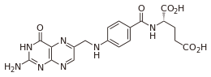

COENZYMES AND VITAMINS
The majority of the coenzymes are derived from vitamins, which are substances that organisms require in their diet as they do not synthesize them. In extreme cases, exclusion of a vitamin from the diet results in an overt disease state. Consider the case of thiamine, the first vitamin discovered. In Asian populations, a diet consisting mainly of polished rice led to outbreaks of beriberi, with muscle weakness and swelling among its symptoms. The discarded rice husks are a rich source of thiamine, which was chemically identified as a “vital amine’, and, hence, the portmanteau word vitamin was born.
While it was once believed that all vitamins would be amines, it is clear that they are structurally diverse (Table 7.1). Most vitamins were assigned the letter B with a number (e.g., B1, B2) to distinguish new members of the “vitamin B complex”. The only common feature of this group — which accounts for most of the vitamins — is that they are water-soluble. A major lipid-soluble vitamin that is a coenzyme is Vitamin K or phylloquinone. Menadione serves the same function as phylloquinine, and the two are structurally related, with identical fused ring structures but a different length of a repeated branched-chain lipid. Menadione is synthesized by our gut bacteria and meets about half the requirement for this coenzyme.
Table 7.1 lists one form of the most common vitamins, yet alternative structures exist in nature that can be metabolically converted into the active coenzyme in humans. For example, there are three forms of pyridoxine: alcohol, aldehyde, and amine. All are converted into a single coenzyme form.
The major coenzymes, including both vitamin-derived and endogenously synthesized, can be organized into four groups: redox, acyl transfer, carboxylation, and exchange. We will consider the essential reactions in this chapter and expand on how the coenzymes are used in the context of enzymes and metabolic pathways in ensuing chapters.
| Vitamin | Source | Structure | Coenzyme |
|---|---|---|---|
| Biotin B7 | Eggs, whole grains | Biotin | |
| Folate B9 | Meats, leafy vegetables, whole grains |  | Dihydrofolate, tetrahydrofolate |
| Niacin B3 | Meats, leafy vegetables, whole grains | NAD+, NADP+ | |
| Panthothenate B5 | Meats, whole grains |  | Coenzyme A |
| Phylloquinone (or Phytomenadione) K1 | Leafy vegetables, plan oils | Phylloquinone | |
| Pyridoxine B6 | Meats, cereals, fruits | Pyridoxal phosphate | |
| Thiamine B1 | Whole, grains | Thiamine pyropshospate |